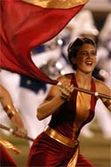
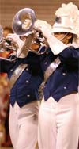

|
Bluecoats Profile on DrumsOfSummer.com
|
| = 2004 Bluecoats Profile = |
Introduction to the Bluecoats

The Bluecoats were founded in 1972 as an outgrowth of the Canton Police Boys Club. The program is made up of 135 men and women between the ages of 15 and 22.
Since 1987, the Bluecoats have conistently placed in DCI's "Top 12".
Some of the Bluecoats honors have included:
- DCI World Championship Finalists: 1987-1998, 2000-2003
- Great Lakes Drum Corps Association Champion: 1985, 1986, 1987
- DCI East Finalist: 1993, 1992, 1991, 1988
- DCI Midwest Finalist: 1991, 1990, 1989, 1988
- DCI Canada Finalist: 1991, 1988, 1987, 1986
- DCI South Finalist: 1987
- US Open Finalist: 1993, 1987, 1986, 1976
- US Open Class "A" Champion: 1981
- American International Open Class "A" Champion: 1978
- DCM Championship Finalist: 1986 through 1993
- DCE Championship Finalist: 1985
- Ohio VFW State Champion: 1976 through 1984
|
2004 Program

The Bluecoats 2004 program is entitled Mood Swings.
The program features:
On The Web
|
|
|
|